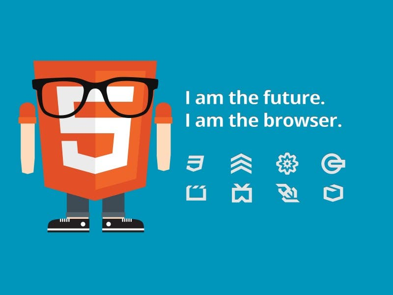

Entendiendo HTML5: guía para principiantes
Durante los últimos años, el estándar HTML5 se ha estado afianzando en muchas páginas web. Sin embargo, ¿qué queremos decir con esto? ¿Cuál es la diferencia crucial entre el HTML “común”, por así decirlo, y este nuevo estándar? Hoy hablaremos sobre esto y responderemos a la pregunta de qué es HTML5. Cabe considerar que la información estará orientada a personas que no tienen experiencia previa y quieren aprender. Es posible que muchos tengan ya una idea avanzada de esto, y quizás sea demasiado básico. En fin, podemos comenzar.
Qué es HTML5
HTML5 es un lenguaje markup (de hecho, las siglas de HTML significan Hyper Text Markup Language) usado para estructurar y presentar el contenido para la web. Es uno de los aspectos fundamentales para el funcionamiento de los sitios, pero no es el primero. Es de hecho la quinta revisión del estándar que fue creado en 1990. A fines del año pasado, la W3C la recomendó para transformarse en el estándar a ser usado en el desarrollo de proyectos venideros. Por así decirlo, qué es HTML5 está relacionado también con la entrada en decadencia del viejo estándar HTML 4, que se combinaba con otros lenguajes para producir los sitios que podemos ver hoy en día. Con HTML5, tenemos otras posibilidades para explotar usando menos recursos. Con HTML5, también entra en desuso el formato XHTML, dado que ya no sería necesaria su implementación.
HTML4 fue “declarado” el lenguaje oficial de la web en el año 2000, y tomó una década para comenzar a implementar el desarrollo de su nueva revisión. Esta nueva generación de HTML, se dice, pronto dominará el desarrollo en internet, pero introduce algunos cambios importantes que veremos dentro de algunas líneas. Por ende, para los desarrolladores de sitios web es importante conocer las ventajas de HTML5, considerando que algunas entidades se están moviendo en esta dirección. No solamente Google con su navegador Chrome, hace unos años, sino también Adobe hace unos meses, que removió el soporte de Flash para Android para dar paso a la llegada de HTML5.
Volviendo a qué es HTML5. Se trata de un sistema para formatear el layout de nuestras páginas, así como hacer algunos ajustes a su aspecto. Con HTML5, los navegadores como Firefox, Chrome, Explorer, Safari y más pueden saber cómo mostrar una determinada página web, saber dónde están los elementos, dónde poner las imágenes, dónde ubicar el texto. En este sentido, el HTML5 no se diferencia demasiado de su predecesor, un lenguaje del cual hablamos hace algunos meses en nuestra guía básica de HTML. La diferencia principal, sin embargo, es el nivel de sofisticación del código que podremos construir usando HTML5.
Cuáles son sus novedades
En términos de Markup, el HTML5 introduce algunos elementos que hacen que se aggiorne a los tiempos que corren. Así, muchas de las novedades están relacionadas con la forma de construir websites que se tiene en la actualidad. Una de las más importantes novedades está relacionada con la inserción de multimedia en los sitios web, que ahora contarán con etiquetas HTML especiales para poder ser incluidos. Por otro lado, algunos aspectos de diseño también son incluidos en el lenguaje, así como también algunos detalles de navegación. Veremos todo esto en algunas líneas.
Con el uso de HTML5, se puede reducir la dependencia de los plug-ins que tenemos que tener instalados para poder ver una determinada web. Caso emblemático, el de Adobe Flash, que se ve claramente perjudicado por la instauración de este estándar. Por otro lado, fue un avance importante para dispositivos que de forma nativa no soportaban Flash, y que no soportaban tampoco plug-ins necesarios para hacerlo. Otro caso emblemático, el del iPhone. Pero además, con HTML5 se amplía el horizonte del desarrollo de aplicaciones que pueden ser usadas en una multiplicidad de dispositivos.
Gracias a HTML5, los usuarios pueden acceder a sitios web de manera offline, sin estar conectados a internet. Se suma también la funcionalidad de drag and drop, y también la edición online de documentos ampliamente popularizada por Google Docs. La geolocalización es uno de sus puntos fuertes, pero por otro lado, las etiquetas diseñadas especialmente para el audio y el video ahorran la necesidad de tener que tener un plug-in de Flash y, al mismo tiempo, asestan un golpe mortal al producto de Adobe, que cada vez se está usando menos. Sin embargo, es importante destacar que Flash sigue siendo utilizado y HTML5 todavía no hizo el “salto grande”, aunque está en camino.

Las nuevas etiquetas
El lenguaje HTML funciona a través de marcas de sentido llamadas etiquetas. Las etiquetas son la herramienta fundamental para que los navegadores puedan interpretar el código y permitirnos ver imágenes, texto, párrafo, y estructuras. Los navegadores vendrían a ser como “traductores” de las etiquetas, y con HTML5, se agregan nuevas etiquetas para utilizar que nos ahorran el uso de otros productos que se usaban para complementar y hacer cosas que con el simple HTML no se podían hacer. HTML5 fue creado para hacer que el proceso de escribir el código sea más simple y más lógico, por decirlo de una forma. La sintaxis de HTML5 se destaca, como dijimos, en el ámbito multimedia, pero son bastantes las etiquetas introducidas para generar una mejoría.
La idea detrás de HTML5 es que podamos visualizar el contenido multimedia variado que podemos encontrar en internet aún cuando nos encontramos en dispositivos de gama baja que no podrían soportarlo cuando tienen que instalar infinidad de plug-ins. No solamente contamos con etiquetas especiales como audio, video y canvas, sino también integración con contenidos de gráficos en vectores (que anteriormente se conocía como la etiqueta object. Con estas etiquetas, los usuarios pueden consumir videos y canciones, por ejemplo, sin necesidad de instalar nada de forma adicional.
Las más importantes de las nuevas etiquetas creadas son:
- article: esta etiqueta sirve para definir un artículo, un comentario de usuario o una publicación independiente dentro del sitio.
- header, footer: estas etiquetas individuales ahorran tener que insertar IDs para cada uno, como se solía hacer anteriormente. Además, se pueden insertar headers y footers para cada sección, en lugar de tener que hacerlo únicamente en general.
- nav: la negación puede ser insertada directamente en el markup, entre estas etiquetas, que nos permitirán hacer que nuestras listas oficien de navegación.
- section: con esta etiqueta, una de las más importantes de las novedades, se puede definir todo tipo de secciones dentro de un documento. Por ponerlo de forma sencilla, funciona de una forma similar a la etiqueta div que nos separa también diferentes secciones.
- audio y video: estas son las dos más importantes etiquetas de HTML5, dado que nos permiten acceder de forma más simple a contenido multimedia que puede ser reproducido por casi todo tipo de dispositivos; marcan el tipo de contenido que estará en su interior.
- embed: con esta etiqueta se puede marcar la presencia de un contenido interactivo o aplicación externa.
- canvas: finalmente, esta etiqueta nos permite introducir un “lienzo” dentro de un documento, para poder dibujar gráficos por vectores; será necesario el uso de JavaScript.
Hay otras etiquetas inaguradas por HTML5 pero destacamos estas por la innovación que introducen en nuestro código. Las etiquetas a las que estábamos acostumbrados, por otro lado, introducen un nuevo funcionamiento. El caso ejemplo es el de las etiquetas header y footer, que, como dijimos, ahora permiten separar las secciones, y no solamente el comienzo y el fin de una página. El funcionamiento del DOCTYPE también se renueva, siendo mucho más simple de usar y menos engorroso. No vamos a explayarnos demasiado en este sentido, dado que, como dijimos, nos estamos orientando a principiantes y curioso, pero con HTML5 vamos a poder escribir mucho menos.
Ya repasamos qué es HTML5, y cuáles son sus usos principales y sus innovaciones más importantes. Para los diseñadores, es algo que debería, y de hecho, ya se está haciendo, implementarse inmediatamente. Las posibilidades son muchas. Esperamos poder haber aclarado algunas dudas importantes, o haber despertado algo de curiosidad para que averigüen más.